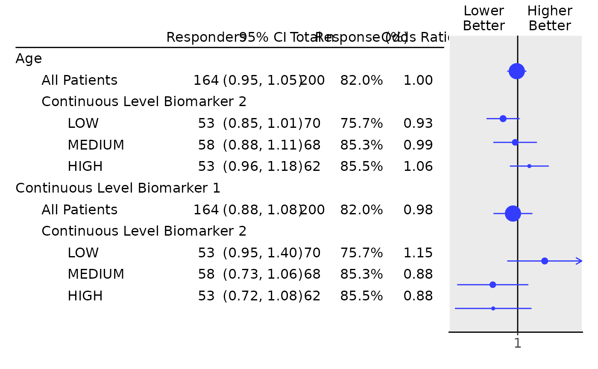

Tabulate biomarker effects on binary response by subgroup
Source:R/response_biomarkers_subgroups.R
response_biomarkers_subgroups.Rd![[Stable]](figures/lifecycle-stable.svg)
The tabulate_rsp_biomarkers() function creates a layout element to tabulate the estimated biomarker effects on a
binary response endpoint across subgroups, returning statistics including response rate and odds ratio for each
population subgroup. The table is created from df, a list of data frames returned by extract_rsp_biomarkers(),
with the statistics to include specified via the vars parameter.
A forest plot can be created from the resulting table using the g_forest() function.
Usage
tabulate_rsp_biomarkers(
df,
vars = c("n_tot", "n_rsp", "prop", "or", "ci", "pval"),
na_str = default_na_str(),
...,
.stat_names = NULL,
.formats = NULL,
.labels = NULL,
.indent_mods = NULL
)Arguments
- df
(
data.frame)
containing all analysis variables, as returned byextract_rsp_biomarkers().- vars
(
character)
the names of statistics to be reported among:n_tot: Total number of patients per group.n_rsp: Total number of responses per group.prop: Total response proportion per group.or: Odds ratio.ci: Confidence interval of odds ratio.pval: p-value of the effect. Note, the statisticsn_tot,orandciare required.
- na_str
(
string)
string used to replace allNAor empty values in the output.- ...
additional arguments for the lower level functions.
- .stat_names
(
character)
names of the statistics that are passed directly to name single statistics (.stats). This option is visible when producingrtables::as_result_df()withmake_ard = TRUE.- .formats
(named
characterorlist)
formats for the statistics. See Details inanalyze_varsfor more information on the"auto"setting.- .labels
(named
character)
labels for the statistics (without indent).- .indent_mods
(named
integer)
indent modifiers for the labels. Defaults to 0, which corresponds to the unmodified default behavior. Can be negative.
Details
These functions create a layout starting from a data frame which contains the required statistics. The tables are then typically used as input for forest plots.
Note
In contrast to tabulate_rsp_subgroups() this tabulation function does
not start from an input layout lyt. This is because internally the table is
created by combining multiple subtables.
Examples
library(dplyr)
library(forcats)
adrs <- tern_ex_adrs
adrs_labels <- formatters::var_labels(adrs)
adrs_f <- adrs %>%
filter(PARAMCD == "BESRSPI") %>%
mutate(rsp = AVALC == "CR")
formatters::var_labels(adrs_f) <- c(adrs_labels, "Response")
df <- extract_rsp_biomarkers(
variables = list(
rsp = "rsp",
biomarkers = c("BMRKR1", "AGE"),
covariates = "SEX",
subgroups = "BMRKR2"
),
data = adrs_f
)
# \donttest{
## Table with default columns.
tabulate_rsp_biomarkers(df)
#> Modifying subtable (or row) names to ensure uniqueness among direct siblings
#> [root -> { root, root[2] }]
#> To control table names use split_rows_by*(, parent_name =.) or analyze(., table_names = .) when analyzing a single variable, or analyze(., parent_name = .) when analyzing multiple variables in a single call.FALSE
#> Total n Responders Response (%) Odds Ratio 95% CI p-value (Wald)
#> —————————————————————————————————————————————————————————————————————————————————————————————————————————————————
#> Age
#> All Patients 200 164 82.0% 1.00 (0.95, 1.05) 0.8530
#> Continuous Level Biomarker 2
#> LOW 70 53 75.7% 0.93 (0.85, 1.01) 0.0845
#> MEDIUM 68 58 85.3% 0.99 (0.88, 1.11) 0.8190
#> HIGH 62 53 85.5% 1.06 (0.96, 1.18) 0.2419
#> Continuous Level Biomarker 1
#> All Patients 200 164 82.0% 0.98 (0.88, 1.08) 0.6353
#> Continuous Level Biomarker 2
#> LOW 70 53 75.7% 1.15 (0.95, 1.40) 0.1584
#> MEDIUM 68 58 85.3% 0.88 (0.73, 1.06) 0.1700
#> HIGH 62 53 85.5% 0.88 (0.72, 1.08) 0.2104
## Table with a manually chosen set of columns: leave out "pval", reorder.
tab <- tabulate_rsp_biomarkers(
df = df,
vars = c("n_rsp", "ci", "n_tot", "prop", "or")
)
#> Modifying subtable (or row) names to ensure uniqueness among direct siblings
#> [root -> { root, root[2] }]
#> To control table names use split_rows_by*(, parent_name =.) or analyze(., table_names = .) when analyzing a single variable, or analyze(., parent_name = .) when analyzing multiple variables in a single call.FALSE
## Finally produce the forest plot.
g_forest(tab, xlim = c(0.7, 1.4))

# }